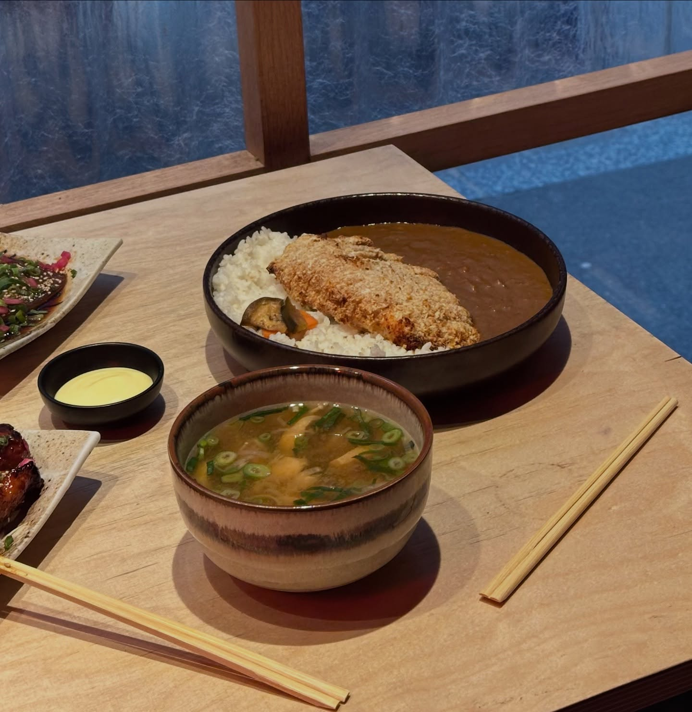
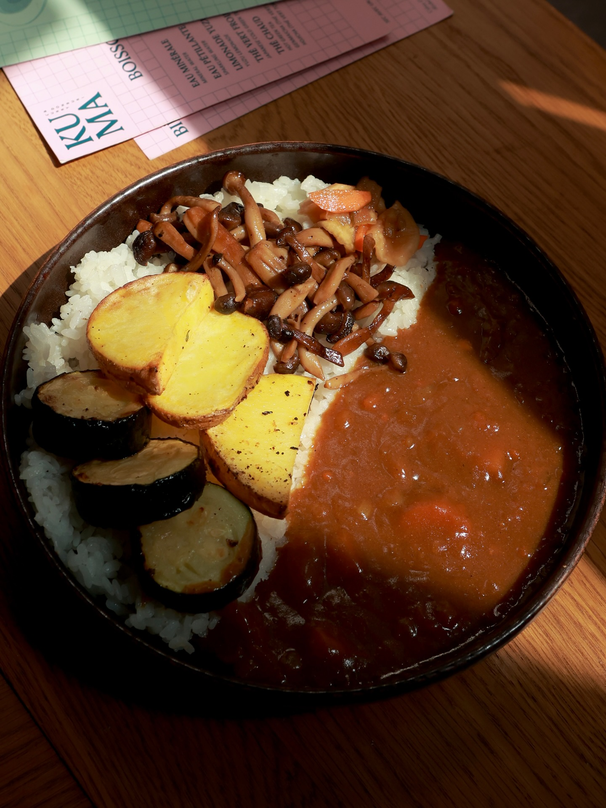
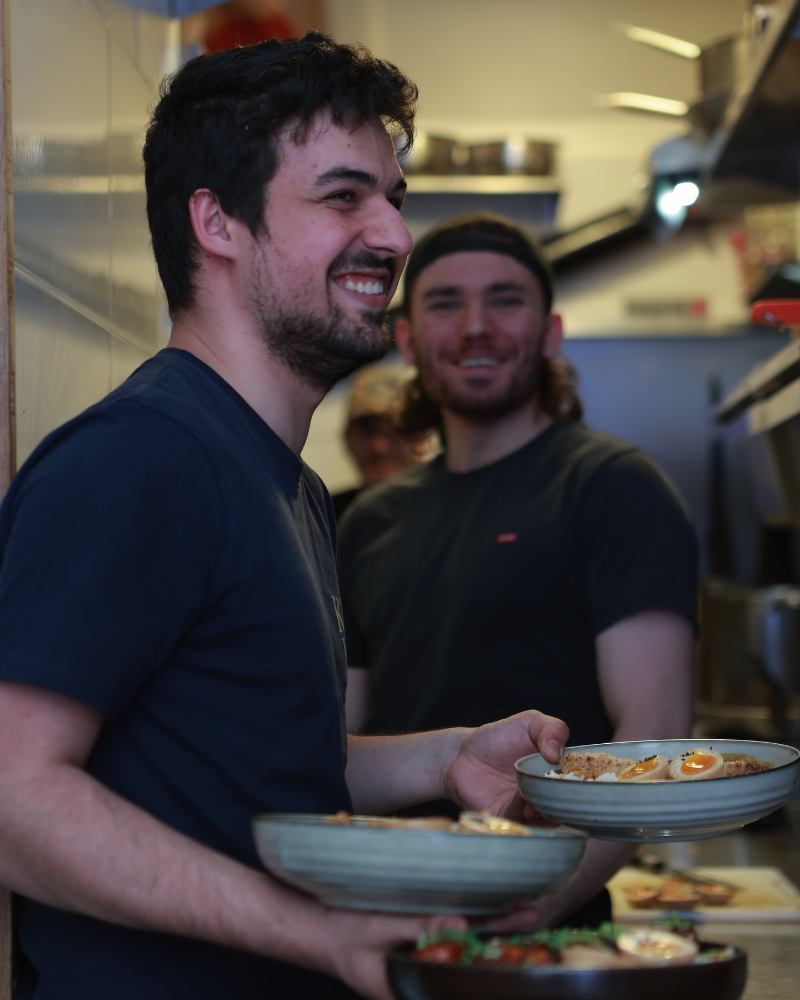

Katsu Curry
€14Panko-breaded pork cutlet, our slow-cooked Japanese curry, koshihikari rice. Add a nitamago egg to make it a feast.

くま
Cuisine familiale et généreuse — Japanese curry & donburi in the heart of Paris.

KUMA opened in 2019 on rue des Écouffes in the Marais — a small counter serving the food we love: Japanese curry mijoté for hours, and donburi built around good rice. Family cooking, generous portions, nothing more.
Everything is made in-house each day. Our second address opened on rue Cadet in the 9th, with a few more seats and a small terrace. Both are still small, still walk-in, still the same short menu — the way we like it.

Panko-breaded pork cutlet, our slow-cooked Japanese curry, koshihikari rice. Add a nitamago egg to make it a feast.
Roasted seasonal vegetables — mushroom, aubergine, pumpkin — over rice with our house curry. Fully vegetarian.
Walk-in only. The counters are small, so arrive early — it's part of the charm.
8 rue Cadet
75009 Paris
Mon–Sat: 12:00 – 14:30
19:00 – 22:30
Sun: Closed
Walk-in only · Without reservation
5 rue des Ecouffes
75004 Paris
Tue–Sun: 12:00 – 15:00
19:00 – 23:00
Mon: Closed
Walk-in only · Without reservation
Small counters, big bowls. See what's on today.
See the Menu